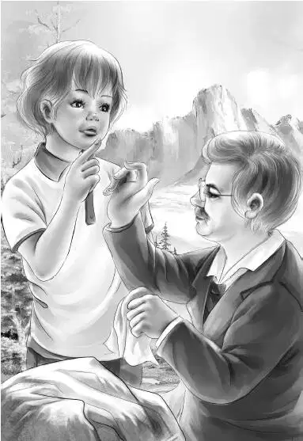

Chapter 7 A Stranger
亨利和杰西再没提起那个印第安男孩，不过两人都没忘记这事儿。偶尔，他们心里也会禁不住好奇：那个男孩从哪来？为什么出现在那里？为什么不想被人看到？
不过一路上需要他们费神的事儿实在太多，比如有的路已经被乱石堵得严严实实，他们不得不绕上一段，或是直接翻过去。
“幸好石头滚下来的时候路上没有人。”班尼回头叫了一声。
“我正想提醒你们呢，要是再有石头滚下来，咱们可要准备随时躲避。”爷爷说。
“咱们身后好像有人，”亨利说，“还是小心点儿，别把石头碰掉了，砸到人家。”
“有人才好呢！”奥登先生大笑起来，“要不然，咱们中午可就没饭吃了。卡特先生会把咱们的午饭带到山顶——包括奥斯古博士和工人的午饭。”
“那他的负担不是很重吗？”班尼说道，“总共是九个人的午饭呢！”
“别担心，”爷爷说，“卡特自有办法。”
眼看就要到峰顶时，大家听到了一阵喧闹声，似乎是有人在砍树和敲击着什么。果然，很快他们就看到两名工人正在清理小路左侧的灌丛和小树，峰顶四周已经清理干净，只剩下一片光秃秃的岩石。
两人清理出了一片空地，大伙儿刚好可以坐下来观看工人们劳作。
只见周围堆着木材，一架结实的梯子已经搭好，一块又长又平的木板用石头稳稳地压着，架在了洞口。
奥斯古博士正站在木板上，弯腰仔细打量着黑乎乎的山洞。
“看来奥斯古博士等不及了呢。”班尼说。
只见这位探险家戴起眼镜，手持明亮的手电筒，忙得不亦乐乎。他压根就没有察觉到奥登一家的到来。
爷爷在枯草上坐了下来，“我想，奥斯古博士是想先弄清楚，那是个什么样的岩洞，到底值不值得研究。”
“哦，天哪！”班尼叫道，“但愿是值得的。要不然咱们只能中途放弃，灰溜溜地回家，那可太糟了。”
“我觉得不会，”亨利说，“快看博士！”

此时，奥斯古博士的上半身全都探到洞里去了，奥登一家只能看到他的两条腿。
奥斯古博士猛地抬起头，侧过身对旁边的工人吩咐了些什么，奥登一家没听清，只听到工人们回答：“好的，先生！”看起来他们和奥斯古博士常年在一起工作，已经很有默契了。
随后，博士爬了下来，坐到爷爷身旁，重新将眼镜推到了额头上。
“怎么样，波西，有好消息吗？”爷爷问道。
“非常好的消息。”奥斯古博士点了点头，拿起一块红色的大手帕擦了擦脸，“平古峰在变平之前是什么样子，我虽然一点儿都不清楚。”他冲孩子们笑了笑，“但我可以很有把握地说，最初在后山也有一个洞口，不过后来山体发生变化——可能是轻微的地震，导致那个洞口被埋。好在这一端的洞口没有被挤垮，这么多年来都保持着原状。”
“这么说，这个洞口原来是山洞的后半部分？”班尼问。
“没错。”奥斯古博士答道，“你今后肯定可以成为一名洞穴专家呢！”
“要用炸药吗？”班尼问道。
“不，我可不这样想。我们可以用最快的速度把它钻通——据说那一端已经完全堵死了。唉，管它的，走一步看一步好了。哈，我的救兵到了！”
“我还以为是我的救兵带着午餐到了呢！”爷爷说道。
“你们都没说错。”亨利沿着小路望了下去，只见另外两名工人拖着沉甸甸的木材爬了上来。卡特先生跟在后面，身上背了一个大背包。
不过亨利更关心另一个问题：“奥斯古博士，您打着电筒在洞里看到了什么？”
“光线只能照到十英尺远的地方，”奥斯古博士说，“越往里越开阔——我敢说，只要咱们往里爬个15英尺左右，就能站起来了。这鬼地方肯定已经两百多年没人来过了——也许不到两百年，也许不止两百年。不过我可没看到什么宝藏。你们一定要有心理准备，进去探险可以，但有可能什么也探不到。所以说，这份工作需要耐心。我的工作经常都是一无所获，白白浪费时间。”
“我可不想这样。”班尼说道。
“是啊，我已经看出来了。”奥斯古博士边说边迅速起身，顺着梯子爬到了工人面前，开始用蓝色的粉笔在岩石上做起标记来。
奥斯古博士离开后，爷爷问：“你们有没有注意到，刚才在人群里有个印第安男孩？”
“注意到了！”孩子们齐声叫了起来。
“珞凡不是说，这附近的印第安人就剩她一个了吗？”亨利说道，“可真奇怪。”
“或许，连她也不知道还有个印第安男孩吧。”爷爷说。
卡特先生跟大家坐在了一起：“我本想跟那个男孩聊几句，后来忙着张罗午饭，就没顾上。不过我会找他谈谈的。”
“好极了！”奥登先生说，“也许他并不住在这儿，只是听到了平古峰上的消息才赶过来的。”
“他的耳朵还真灵呢。”班尼说道。
“应该说，是消息传得快才对。”爷爷若有所思地说。
“但愿他不会去打扰珞凡。”维莉说。
“他不会的，等我们下山后就会看到。”奥登先生说，“而眼下我们最要紧的事情是，找到珞凡的宝藏。”
“糟糕，宝藏会不会昨晚被人偷走了？”班尼惨叫一声。
“要是登山技术够好，行动足够隐秘，再加上一晚的时间，”卡特先生说道，“倒是有这个可能。”